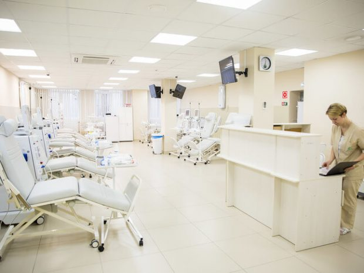
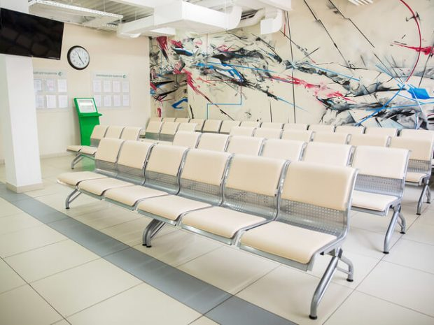
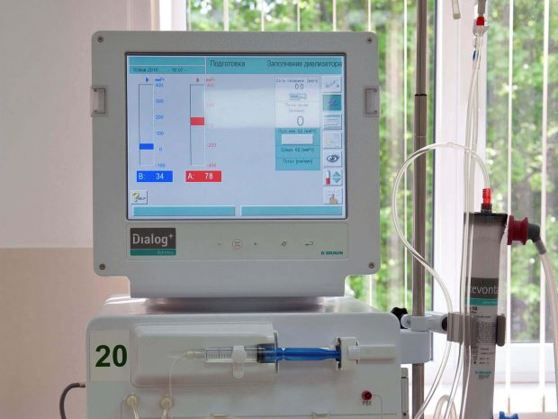
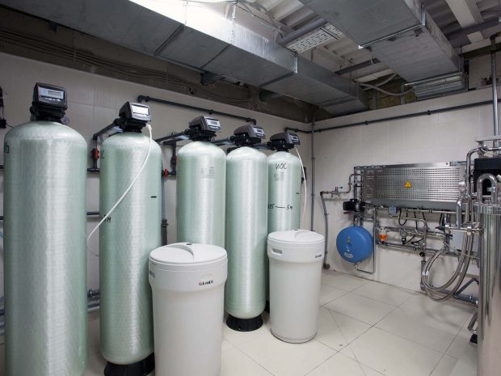
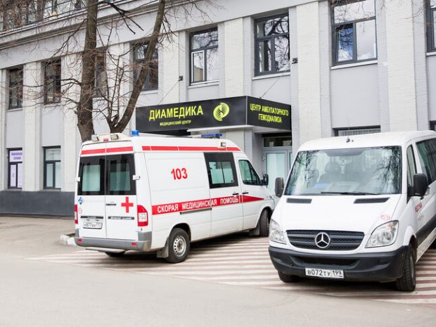

Клиника амбулаторного гемодиализа в Москве
Четыре центра «Диамедика» рядом с метро. Программный и гостевой диализ, консультации нефролога — бесплатно по полису ОМС.
Или позвоните: +7 (499) 455-05-28

Наши центры
4 центра в Москве
Приём по предварительной записи
10+лет опыта группы
4центра в Москве
600пациентов
101аппарат «искусственная почка»
О КЛИНИКЕ
Современная помощь рядом с домом
«Диамедика» входит в группу компаний «Клиники Диализа» и более десяти лет развивает сеть специализированных центров гемодиализа в России.
В Москве работают четыре амбулаторных центра: в Алтуфьеве, Перове, Пражской и Шипиловской. Медицинская помощь оказывается по полису ОМС, в том числе для гостевых пациентов.
ЦЕНТРЫ
Выберите удобный центр



м. Шипиловская
Шипиловская
ул. Шипиловская, д. 34, корп. 1
+7 (495) 393-28-73 Как добраться на карте →КОМФОРТ И КАЧЕСТВО
5 условий для пациентов
01
Оборудование B.Braun
Аппараты «Диалог+» с онлайн-контролем адекватности процедуры.
02
Водоподготовка
Тепловая стерилизация петли при 98 °C для качества и безопасности.
03
Сухой вес
Индивидуальное определение и контроль сухого веса пациента.
04
Лабораторные исследования
Расширенный спектр анализов для контроля лечения.
05
Консультации специалистов
Бесплатные консультации ведущих специалистов по нефрологии.
УСЛУГИ
Помощь по ОМС
Программный гемодиализ
Плановые процедуры для пациентов с хронической болезнью почек в амбулаторном центре.
Подробнее →Гостевой диализ
Сеансы для пациентов, временно находящихся в Москве. Поможем с записью в удобный центр.
Подробнее →Консультация нефролога
Оценка функции почек, подбор терапии и наблюдение профильными специалистами.
Подробнее →ПАЦИЕНТАМ
Как получить помощь по ОМС
1
Позвоните или оставьте заявку
Администратор уточнит ситуацию и подберёт удобный центр.
2
Подготовьте документы
Паспорт, полис ОМС, направление и медицинские документы при наличии.
3
Приходите в центр
Врач проведёт консультацию и определит программу лечения.
ЗАПИСЬ
Нужна консультация?
Оставьте контакты — администратор свяжется с вами в рабочее время.
КОНТАКТЫ